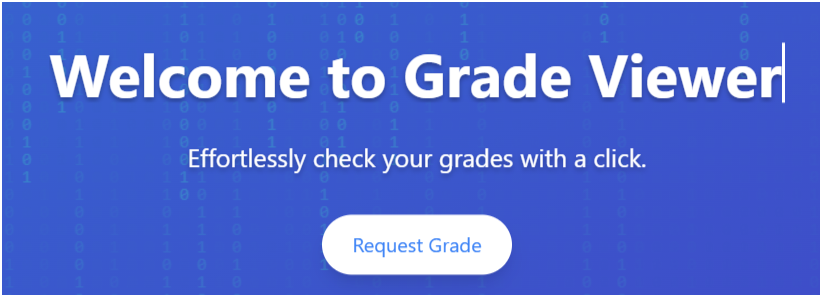
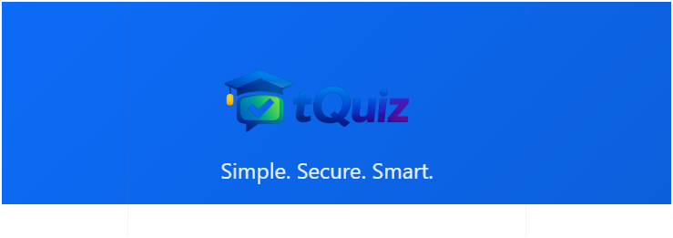

IT Instructor · Web Systems Developer · Creative Technologist
I'm Davinci — a Licensed Professional Teacher (LPT) with a Master's in Information Technology, currently shaping future developers as an IT Instructor at Fullbright College. My mission is to blend education with innovation: I build practical, human-centered web systems and empower students to think creatively through code.
My teaching philosophy goes beyond theory, I bring real-world development into the classroom. Outside academics, I'm a full-stack developer crafting robust web applications, from LMS platforms to smart business tools. Every project is brewed with passion, precision, and purpose.
"Learning should be practical, creative, and impactful."
☕ Coffebits – Where creativity meets code, and ideas brew into innovation.
Languages · Frameworks · Design tools that shape my workflow.
+ UI/UX mindset, responsive design & system architecture
Web systems, interactive platforms, and tools I've built — where code meets impact.
The ECT Attendance System is a digital platform designed to streamline and automate the process of tracking attendance for educational institutions, corporate training programs, or workshops. It allows administrators, teachers, or coordinators to efficiently monitor participant presence, manage schedules, and generate attendance reports in real-time.

GrBoot, also known as Grade Companion, is an intuitive academic management system designed to help students, teachers, and institutions efficiently track, manage, and analyze grades. The platform provides a centralized hub for recording scores, monitoring academic performance, and generating insightful reports to support learning and decision-making.
StudyBuddy is a smart educational companion designed to help students optimize their learning experience. It provides tools for organizing study schedules, tracking progress, and improving productivity, making studying more effective and less stressful.

tquiz.great-site.net can be described as a basic quiz web application aimed at learning and entertainment, possibly created for educational purposes, personal projects, or small-scale online quizzes.